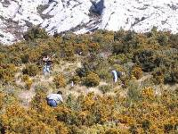

{kind=link}

Photo: Ph. Lotte Photo: B.Franchaise Photo: B. Franchaise
|
|
Les arbres ainsi plantés et protégés sont ensuite livrés à eux mêmes . Au bout de quelques années, la garrigue qui a repoussé sur le terrain et qui leur a assuré une protection naturelle supplémentaire au départ gêne leur développement, et surtout les met en danger en cas de propagation d'un nouvel incendie. Si on n'intervient pas, on se retrouve rapidement avec une végétation impénétrable de broussailles et de pins comme le montre la première photo.
Il est donc nécessaire d'entretenir régulièrement les espaces reboisés.
Cet entretien
est réalisé une fois par mois par les membres de l'association.
Photo: Ph. Lotte
Photo: B.Franchaise
Photo: B. Franchaise
Dégagement autour des arbres à la cisaille Binage au pied des arbres


Photo: Ph. Lotte Photo: Ph. Lotte
Photo: Ph. Lotte
Vue générale Dégagement à la tronçonneuse Taille des petits pins à la cisaille.
Ces journées très conviviales sont source de grandes satisfactions
, car elles permettent de suivre régulièrement la croissance
des arbres, et d'apprécier le fruit des efforts produits depuis de
nombreuses années par les bénévoles.
Depuis quelques années, les élèves de l'école des Arts et Métiers d'Aix nous prêtent main-forte.
Maintenant grâce à eux, toutes les zones plantées à la légion étrangère ont été récemment entretenues